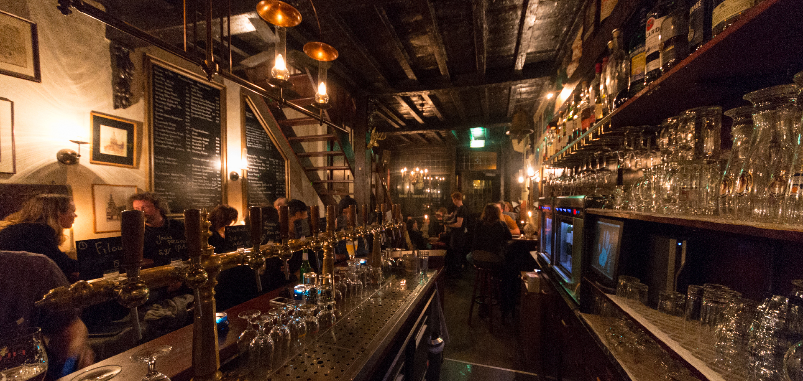
Achter de Hoofdwacht 3, Nijmegen
Het oudste café van Nijmegen.Sinds 1542.
Een dranklokaal in de oude Lakenhal, tussen de Waag en de Sint Stevenskerk. Met roulerende wisseltaps, een eigenaar die vinoloog en biersommelier is, en een keuken die meer doet dan bitterballen.
Historie in elke balk, en een café dat meegaat met de tijd
In ons café kunnen jullie genieten van een geweldige ambiance, goede service en een keur aan kwalitatief hoogwaardige dranken en spijzen. Zowel aan de buitenkant als aan de binnenkant ademt alles historie; in een bedrijf uit 1542 dat meegaat met de tijd, terwijl het verleden nergens wordt genegeerd.
Naast het gebruikelijke assortiment aan snacks hebben we een goede reputatie met onze fameuze flammkuchen en de dinerkaart, waarop altijd de geliefde pittige kaasfondue staat. De eetkaart met huisbereide gerechten wisselt eens in de twee maanden.
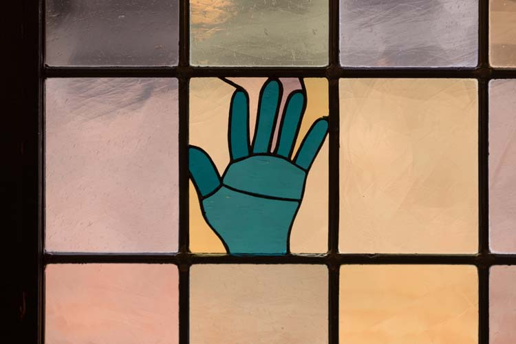
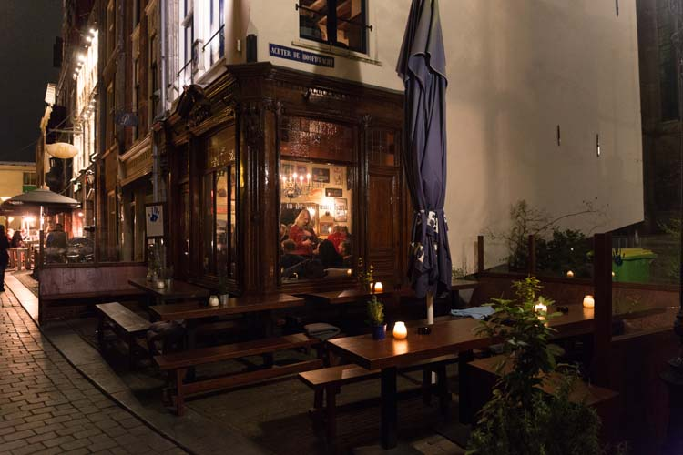
Het terras
Rondom het café ligt een prachtig schaduwrijk terras. Mits de temperatuur het toelaat is het daar goed toeven, met uitzicht op historische bouwwerken als de Waag en de Sint Stevenskerk.
Reserveren is niet mogelijk: loop gewoon binnen.
Drank & spijs
Kwantitatief wellicht niet indrukwekkend, kwalitatief zeer geraffineerd. En steeds weer verrassend met de immer roulerende wisseltaps.
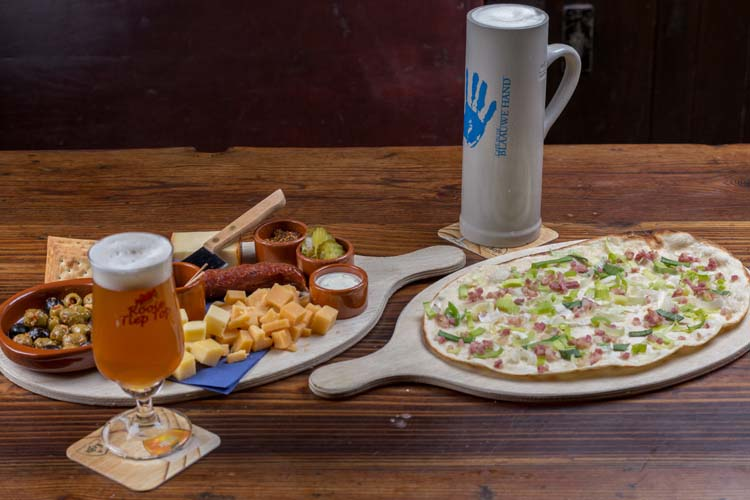
De eetkaart van 31 oktober 2026. Deze kaart wisselt eens in de twee maanden; vraag gerust naar de dagschotel op de krijtborden.
v vegetarisch vg veganistisch
Van de tap
Op fles
In de Blaauwe Hand is een verified venue op Untappd. Het actuele bierassortiment, inclusief wisseltaps en wisselflessen, is daar ook altijd terug te vinden.
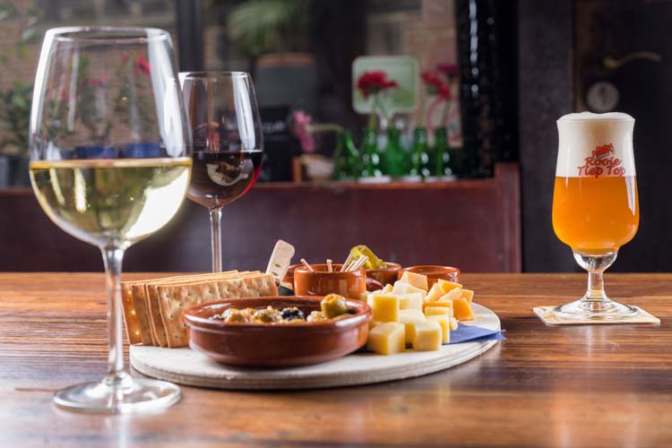
Per glas (12,5 cl) of per fles. Lekker bij de borrel, de flammkuchen of de kaasfondue.
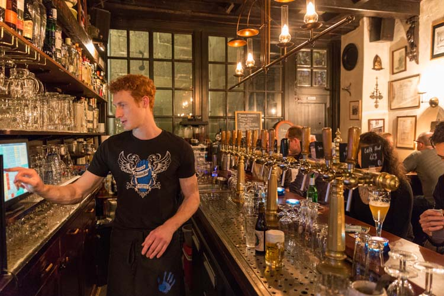
Ons team
Als team hebben we de absolute ambitie om een zo hoog mogelijk kwaliteitsniveau te bereiken voor onze gasten: in producten, kennis, service en hygiëne. Ons team bestaat uitsluitend uit gemotiveerde mensen die er alles aan willen doen om gasten te verwennen. Niet alleen met eten en drinken, maar ook met aandacht en kennis.
Dat de productkennis hoog ligt, heeft onder meer te maken met eigenaar Gert de Graaf, die de zaak sinds 1994 leidt. Gert is naast eigenaar ook docent, vinoloog, biersommelier en (ex-)bierbrouwer. Nieuw personeel wordt intern opgeleid en vaak doorgestuurd naar de Wijnacademie en Stichting Bieronderwijs Nederland (Stibon).
Op de werkvloer wordt alles strak geregisseerd door het managementteam, Stan en Casper. Zij zijn ook verantwoordelijk voor het drankenassortiment.
Onze geschiedenis
In de Blaauwe Hand is het oudste café van Nijmegen, gevestigd in een van de oudste panden van de stad. De naam komt van de lakenververs die hier dronken: het laken werd vooral met indigo geverfd, en de ververs herkende je aan hun blauwe handen.
- ca. 1320
De Lakenhal, of het Gewandthuis, wordt gebouwd. Dit pand en de huizen ernaast vormden samen één gebouw. De blauwgrijze pilaren die je her en der in de gevels en in de panden ziet, stammen uit die tijd. Beneden was een overdekte marktplaats voor laken, op de eerste verdieping zaten de weverij en de lakenververij.
- ca. 1400
In het keldergewelf van de Lakenhal worden al bier- en wijnvaten opgeslagen voor de feesten in de Lakenhal.
- 1542
Rond 1540 is het gedaan met de lakenhandel en wordt het gebouw opgedeeld. De ruimte waar nu het café zit ontstaat in 1542 en doet sindsdien dienst als dranklokaal, vermoedelijk druk bezocht door de lakenververs. In de volksmond heet het al snel “blauwe hand”.
- 1546
Op 9 februari is Keizer Karel de Vijfde aanwezig op een groot feest in dit pand.
- 1797
Tijdens de Franse bezetting moeten huizen een nummer of een gedeponeerde naam voeren. De gevelsteen met “De Blaauwe Hand” wordt in de voorgevel bevestigd.
- ca. 1870
Het café wordt grondig verbouwd. Vooral de voor- en achtergevel worden aangepakt; de fraaie houten puien stammen uit die tijd.
- 1940-1945
De rij Lakenhalpanden lijdt in de Tweede Wereldoorlog relatief weinig schade, in tegenstelling tot de rest van het oude centrum.
- 2000
Het oudste café van de stad wordt zeer grondig en fraai gerestaureerd, zodat het ook in de zesde eeuw van zijn bestaan mee kan.
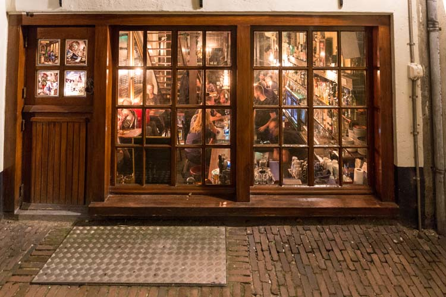
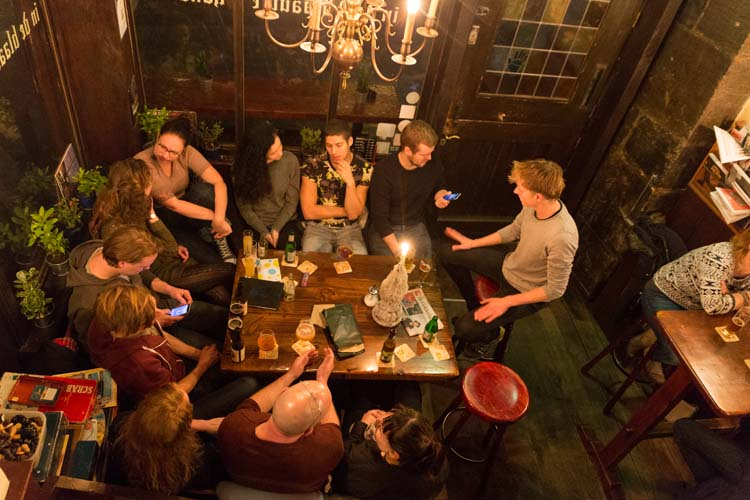
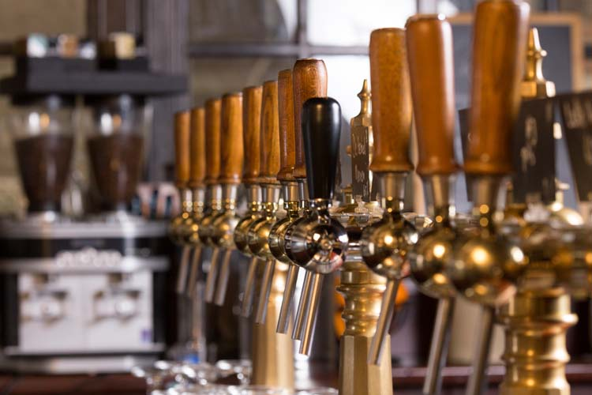
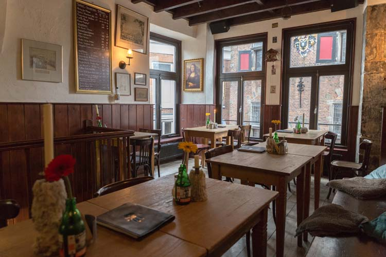
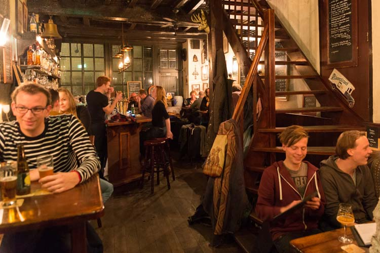
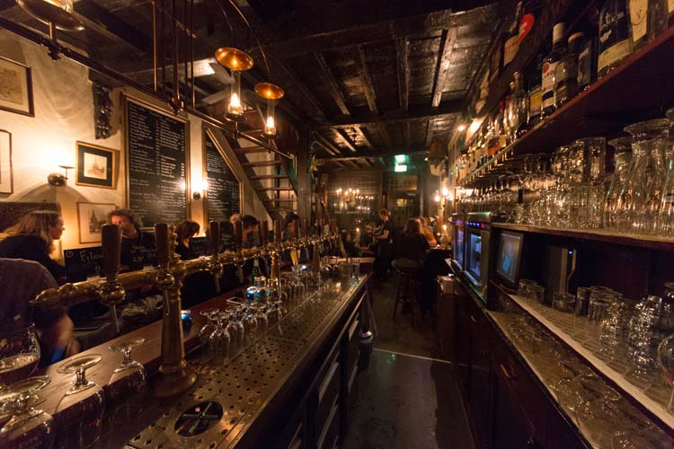
Openingstijden
Per 31 augustus 2026
| Maandag | Gesloten |
|---|---|
| Dinsdag | 15:00 – 00:00 |
| Woensdag | 15:00 – 00:00 |
| Donderdag | 15:00 – 01:00 |
| Vrijdag | 15:00 – 01:00 |
| Zaterdag | 13:00 – 01:00 |
| Zondag | 14:00 – 22:00 |
De keuken: flammkuchen en warme gerechten van één uur na opening tot 20:00 uur, warme hapjes tot 20:00 uur.
Bezoek & contact
Café In de Blaauwe HandAchter de Hoofdwacht 3
6511 VW Nijmegen
Reserveren is niet mogelijk. Je bent welkom zolang er plek is, binnen of op het terras.